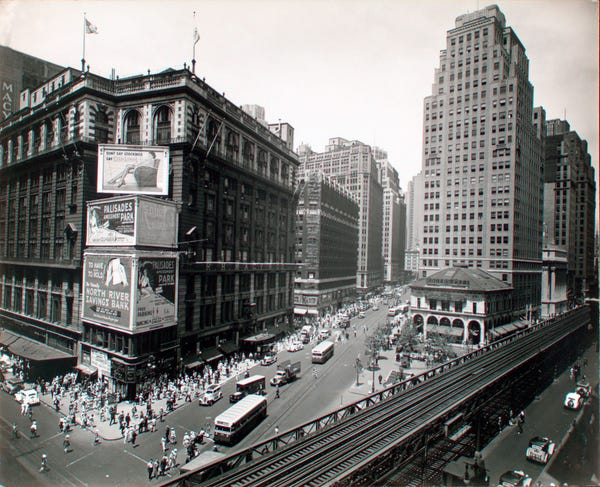

Frances Allen, a pioneer of her industry.
Frances Allen. circa 2003
About Frances Allen
[1932] Born August 4, 1932 in Peru, New York.
Grew up in a farm and attended The New York State College for Teachers

[1954-1957] Graduates with a BS in mathmatics and MS in Mathmatics at the University of Michigan
[1957] Deep in debt from student loans, joins IBM Research as a programmer.
[1959] Joins project
Alpha
where she manages the compiler optimization team for two projects
[1970-1971] Spends a sabbatical in NYU acting as an adjunct professor.
[1980-1985] Led IBM's work in developing paralllel computing and developed software for the IBM Blue Gene project.
[1989] First female to recieve IBM fellowship award
[2002] Retires from IBM.
[2007]
IBM Ph.D Fewllowship
Award created in her honor.
[2020] Dies August 4, 2020 at age 88
*To learn more about Frances Allen and to see references used check out her
Wikipedia page